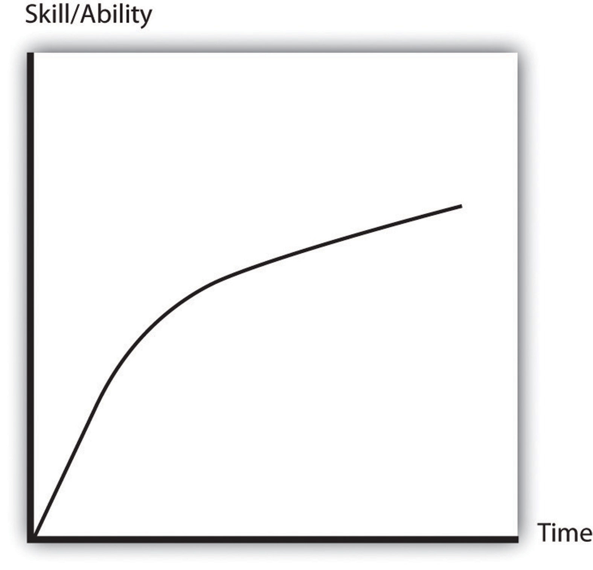

The sustainable business perspective takes into account not only profits and returns on investment but also how business operations affect the environment, natural resources, and future generations. Sustainability at the business level can be thought of as taking steps, such as recycling and conserving nonrenewable material and energy use to reduce the negative impact of a business’s operations on the environment. While managing operations to reduce negative environmental impact is an important part of business sustainability, these types of activities are increasingly part of a deeper strategic perspective on sustainability for businesses.
Businesses implement sustainability in their organization for a variety of reasons. The benefits from pursuing sustainability can include the following:
The most important factors that motivate companies to become more sustainable are internal. This includes the number one objective of companies—to maximize profits. The beliefs and personal values of management and employees can also significantly influence engagement in sustainable business practices. Many managers and employees have an interest in sustainability and its benefits to society. They can move the company forward on sustainable business practices because it’s the right thing to do—that is, owners, managers, and employees believe that sustainable business practices are the moral and ethically right thing to do. Companies with senior management and owners who are committed to sustainable business practices for ethical reasons are more likely to put in place sustainable business practices even without having a detailed assessment of how it will affect revenue, costs, and profitability.
There are also important external factors that influence a business’s decision to become more sustainable, including governmental laws and regulations and consumer and investor interests and expectations. These external factors are strongly influenced by societal trends and values, demographics, new knowledge (including scientific findings, highlighted in Chapter 2 "The Science of Sustainability"), and the media.
Sustainable businesses strive to maximize their net social contribution by embracing the opportunities and managing the risks that result from an organization’s economic, environmental, and social impacts. In many respects, the best measure of business contributions to society are profits. Profits represent the value of products and services that companies provide (as reflected in the prices that consumers are willing to pay for a company’s products and services) minus the direct costs of producing the products or services.
However, private market transactionsThe purchase or sales of goods and services between businesses and other businesses or consumers. do not take into account so-called external costsA cost experienced by a party that is not directly involved in a private market transaction. to market transactions. For example, the external costs associated with the production of electricity from coal include climate change damage costs associated with the emissions of carbon dioxide (CO2) and damage costs (such as impacts on health, crops, etc.) associated with other air pollutants (such as nitrous oxide and sulfur dioxide). These pollutants threaten the future sustainability of natural resources and have a cost, and these costs are not included in the price of energy and not passed on to consumers. Thus market prices do not reflect costs to society perfectly, and this can result in significant differences between profits and the net societal contributions of companies and can present challenges to businesses interested in maximizing their net positive social impact and acting in a sustainable way. Government often acts to address market failure and to reduce the external costs associated with pollution and environmental damage incurred in market activities. Controlling negative externalities is used to justify government restrictions, regulations, taxes, and fees imposed on businesses (see detailed discussion in Chapter 3 "Government, Public Policy, and Sustainable Business"). Governments at the federal, state, and local level in the United States have acted on this. In general, European nations have been more active in trying to address market failures and trying to control external costs associated with market activities in environmental, social, and other arenas than the United States.
The Role of Government Policies in Sustainable Business
Government policies, such as a carbon tax (a tax on pollution), can address externalities by having companies and consumers internalize the costs associated with what were externalities. This can help move private companies focused on profits to activities that better reflect their net social contributions. This will be discussed in more detail in Chapter 2 "The Science of Sustainability".
The challenge of acting in a sustainable way in a private market economy in which the external costs, including those associated with carbon dioxide emissions, are not included is reflected in the Green Mountain Coffee statement that follows.

Source: Wikimedia, http://commons.wikimedia.org/wiki/File:ElSalvadorfairtradecoffee.jpg.
And while we are committed to achieving greater sustainability in our products and practices, we compete in a marketplace where economic value drives demand. This is the challenge of trying to do the right thing in a commercial system that does not yet fully account for its global impact.“Building Demand for Sustainable Products,” Green Mountain Coffee Roasters, http://www.gmcr.com/csr/PromotingSustainableCoffee.aspx.
A challenging task for Green Mountain Coffee and other businesses today is to effectively integrate the traditional business performance objectives (profit maximization) with striving to continuously increase the long-term societal value of their organizations. This challenge is represented by the mission statement from the CEO of Ford Motor Company:
To sustain our Company, meet our responsibilities and contribute to tackling global sustainability issues, we must operate at a profit.“For a More Sustainable Future: Connecting with Society, Ford Motor Company Sustainability Report 2006/7,” Ford Motor Company, http://corporate.ford.com/our-company/our-company-news/our-company-news-detail/sustainability-reports-archive. I have long believed that environmental sustainability is the most important issue facing businesses in the 21st century. Fortunately, unlike 20 years ago, or even five years ago, a growing number of people in our industry now agree, and we are doing something about it. Our vision for the 21st century is to provide sustainable transportation that is affordable in every sense of the word: socially, environmentally and economically…I am convinced that our vision makes sense from a business point of view as well as an ethical one. Climate change may be the first sustainability issue to fundamentally reshape our business, but it will not be the last. How we anticipate and respond to issues like human rights, the mobility divide, resource scarcity and poverty will determine our future success.“2007/8 Blueprint for Sustainability,” Ford Motor Company, http://corporate.ford.com/our-company/our-company-news/our-company-news-detail/sustainability-reports-archive.
The actions and statements of Green Mountain Coffee, Ford Motors, and many leading companies globally demonstrate business interest in sustainability. The interest in sustainability is often written, as with the Ford Motor Company example previously mentioned, in corporate mission or value statements. The exact wording and nature of the commitment to sustainability varies but it is represented in an increasing number of the public documents of corporations.
There is significant variance in how deeply and sincerely companies are committed to their mission and in how much the value statements influence actual company practice. However, just that the statements are made and made public for all to read suggests that sustainability is an important issue for an increasing number of businesses. See the following examples from Hewlett Packard (HP) and Walmart, respectively.
Environmental sustainability is one of the five focus areas of HP’s global citizenship strategy, reflecting our goal to be the world’s most environmentally responsible IT company. This commitment is more than a virtuous aspiration—it is integral to the ongoing success of our business. Our drive to improve HP’s overall environmental performance helps us capitalize on emerging market opportunities, respond to stakeholder expectations and even shape the future of the emerging low-carbon, resource-efficient global economy. It also pushes us to reduce the footprint of our operations, improve the performance of our products and services across their entire life cycle, and innovative new solutions that create efficiencies, reduce costs and differentiate our brand.“HP Environmental Goals,” Hewlett-Packard, http://www.hp.com/hpinfo/globalcitizenship/environment/commitment/goals.html.
The fact is sustainability at Walmart isn’t a stand-alone issue that’s separate from or unrelated to our business. It’s not an abstract or philanthropic program. We don’t even see it as corporate social responsibility. Sustainability is built into our business. It’s completely aligned with our model, our mission and our culture. Simply put, sustainability is built into our business because it’s so good for our business.“Walmart 2009 Global Sustainability Report,” Walmart, http://walmartstores.com/sites/sustainabilityreport/2009/letterMikeDuke.html.
Sustainability 360 is the framework we are using to achieve our goals and bring sustainable solutions to our more than 2 million associates, more than 100,000 suppliers and the more than 200 million customers and members we serve each week. Sustainability 360 lives within every aspect of our business, in every country where we operate, within every salaried associate’s job description, and extends beyond our walls to our suppliers, products and customers.“Overview,” Walmart, http://walmartstores.com/sites/sustainabilityreport/2009/en_overview.html.
These are just a few examples. Among companies from the “Global Top 1,000” that responded to a 2008 survey, about three-quarters (73 percent) have corporate sustainability on their board’s agenda and almost all (94 percent) indicate that a corporate sustainability strategy can result in better financial performance. But significantly, only about one in ten (11 percent) of the “Global Top 1,000” are actually implementing a corporate sustainability strategy.M. Van Marrewijk, “Concepts and Definitions of CSR and Corporate Sustainability,” Journal of Business Ethics 44, nos. 2–3 (2003).
In a separate 2009 MIT study with the Boston Consulting Group (BCG) titled The Business of Sustainability, of 1,500 corporate executives surveyed, an overwhelming majority believe that sustainability-related issues are having or will soon have a material impact on their business. Yet relatively few of the companies are taking decisive action to address such issues.
While about 45 percent said their organizations were pursuing “basic sustainability strategies,” such as reducing or eliminating emissions, reducing toxicity or harmful chemicals, improving efficiency in packaging, or designing products or processes for reuse or recycling, less than a third of survey respondents said that their company has developed a clear business case for addressing sustainability. The majority of sustainability actions undertaken to date appear to be limited to those necessary to meet legal and regulatory requirements. The MIT research did indicate that once companies begin to pursue sustainability initiatives, they tend to unearth opportunities to reduce costs, create new revenue streams, and develop more innovative business models.M. Hopkins, “The Business of Sustainability,” MIT Sloan Management Review 51, no. 1 (2009), http://mitsloan.mit.edu/newsroom/2009-smrsustainability.php.
It is not only larger companies that are interested and acting on sustainability. Many smaller and start-up companies are focused on sustainability, with some entrepreneurs, such as Jeffrey Hollender, the founder of Seventh Generation (see Chapter 8 "Case: Marketing Sustainability: Seventh Generation Creating a Green Household Consumer Product"), and Andrew Kellar, the founder of Simply Green (see Chapter 7 "Case: Sustainable Business Entrepreneurship: Simply Green Biofuels"), founding their ventures based on their commitment to sustainability; see Chapter 5 "Entrepreneurship, Innovation, and Sustainable Business" for a broader discussion of sustainable business entrepreneurship.
There are many factors contributing to private companies not implementing corporate sustainability practices. There is a learning curveAlso known as the experience curve; it represents the time it takes for a person or business to learn new technologies, skills, or knowledge. associated with sustainable business practices—ranging from basic compliance to completely changing the business environment—and in many respects a large majority of businesses are just at the initial learning stage.
Figure 1.1 Learning Curve“Rant: Reinventing the Wheel,” My 4-Hour Workweek (blog), February 13, 2010, http://www.my4hrworkweek.com/rant-reinventing-wheel.
Three of the major barriers that impede decisive corporate action are a lack of understanding of what sustainability is and what it means to an enterprise, difficulty modeling the business case for sustainability, and flaws in execution, even after a plan has been developed.
The learning curve on sustainable business practices is steep, and it often entails significant risks and uncertainty. Any change in company practice involves taking on some risk and uncertainty, and this is heightened when taking on something for which the benefits are not clear and are dependent on changing laws, regulations (see Chapter 3 "Government, Public Policy, and Sustainable Business"), and consumer values and interests. But the risks of failing to act decisively are growing, according to many of the thought leaders interviewed in the MIT study.
Learning Curve
The learning curve refers to a graphical representation of learning. The curve represents the initial difficulty of learning something and how there is a lot to learn after the initial learning. In the case of learning about sustainable business practice, managers often quickly learn enough to be interested in it, but then the learning curve is high (steep), and there is a lot to learn to ensure that the sustainable practice serves the interests of the business entity.
There are many different definitions of and frameworks for considering sustainability, and this can confuse businesses considering engaging in more sustainable practices. The confusion and lack of clear definition can result in inaction or a slow response on sustainability. Over 50 percent of respondents to the “Global Top 1,000” sustainability survey stated a need for a better framework for understanding sustainability. Many companies struggle to model the business case for sustainability and need help in doing this. Some companies are making progress on framing and reporting on sustainable business practices and quantifying the impacts of their sustainability efforts internally and externally; see Chapter 4 "Accountability for Sustainability" and Chapter 11 "Case: Accounting for Sustainability: How Does Timberland Do It and Why?".
Another contributing barrier to the implementation of sustainable business practices is the ambitious agenda and enthusiasm of the strongest advocates for sustainability. Since sustainability stresses the interconnectivity of everything, many groups have adopted it. While many of the advocates for sustainability are well intended, they often do not appreciate the difficulties and challenges of implementing sustainable business practices. This leads some businesses to resist the call to put in place sustainable business practices, as the economic and environmental benefits of some of the practices may be exaggerated and oversold, and the commitment asked for by advocates can be perceived as too deep, too costly, and too fast for many companies to accept.
Another contributing factor to corporate inaction on sustainability is that some businesses have acted on sustainability only for public relations purposes and to gain favor with consumers, investors, and government agencies without undertaking any practices with significant benefit to the environment or society. This can discourage businesses that have a sincere interest in sustainable business practice as they fear that they will be branded as greenwashingThe practice of making an unsubstantiated or misleading claim about the environmental benefits of a product, service, or technology. if they are not successful in their efforts.
What Is Greenwashing?
The term used to describe insincere engagement in sustainable business is greenwashing. It was first used by New York environmentalist Jay Westerveld who criticized the hotel practice of placing green “save the environment” cards in each room promoting the reuse of guest towels. The hotel example is especially noteworthy given that most hotels have poor waste management programs, specifically with little or no recycling. The term greenwashing is often used when significantly more money or time has been spent advertising being green rather than spending resources on environmentally sound practices or when the advertising misleadingly indicates a product is more green than it really is. For example, a company may make a hazardous product but put it in packaging that has images of nature on it to make it appear more environmentally friendly than it really is.
Walmart and Accusations of Greenwashing
Walmart has been accused of engaging in greenwashing and has taken actions to deepen their commitment to sustainability to address this accusation. It is very difficult to change a large company, and it has not been an easy task turning Walmart, the world’s largest retailer, around. But after a difficult start, the company is making progress on environmental targets. The company has succeeded in opening an energy efficient prototype in every market globally, and since 2005, Walmart has improved its fleet efficiency by 60 percent. The company has also cut emissions generated at its existing stores, clubs, and distribution centers by 5.1 percent since 2005, putting the company at about 25 percent toward its 2012 goal. However, the company’s absolute carbon footprint has continued to grow, despite it improving facility performance and reducing its carbon intensity over the last two years. In response, the company set the 2015 goal of avoiding twenty million metric tons, which is about 1.5 times the projected cumulative growth of its emissions over the next five years.“Walmart’s Sustainability Report Reveals Successes, Shortcomings,” Greenbiz.com, http://www.greenbiz.com/news/2010/05/12/walmarts-sustainability-report-reveals-successes-shortcomings%20#ixzz0phcjFwWK.
Initial efforts in sustainability in which businesses are just at the initial learning stages and trying to figure out what to do can be confused with greenwashing. This might well have been the case at Walmart and other companies at first. And the steep learning curve and the risks of being accused of being insincere and greenwashing can deter businesses from sustainable business practice.
Another one of the more significant barriers is that sustainability, specifically focusing on factors external to the company, may just not be high on the list of important factors for some businesses. This can be particularly true for businesses that are struggling to keep revenues above expenses and survive economically and for small businesses with limited managerial and economic resources.
And then there are the concerns over the additional costs associated with instituting a commitment to sustainability and undertaking new sustainable business practices. There are often significant upfront costs or investments required that do not have immediate financial return. Many of the potential investments in sustainable practices, including investments in energy efficiency (e.g., installing new insulation in buildings) and renewable energy (e.g., wind power) have payback periods of ten years or longer.
It is the uncertainty associated with sustainable practices that is probably one of the main barriers. For most businesses, there is already so much uncertainty in their operating environment that they do not want to add another source of uncertainty if they perceive that they do not have to. But as with the case of BP and the Gulf Coast oil spill, attention to sustainability could actually reduce uncertainty and risks for businesses.
For example, had BP been more focused on sustainable business practices, they may have asked what are the potential negative environmental and social outcomes that may come from an oil leak. They may have more fully appreciated the disastrous impact on both present and future generations in the Gulf Coast area and also the potential negative financial impacts it would have on their corporate earnings. In conducting this “what-if” analysis, a reasonable outcome of this process may have been to have more rigorous safety controls in place and also to have better disaster response technologies and resources available for their drilling projects.
Among the companies that try to implement sustainable practices, there can be difficulty, and some companies after initial efforts may pull back or resist deeper efforts. Execution may be flawed, and after failed or costly efforts, it can be difficult to overcome skepticism in organizations.
Internal to the corporation there are significant barriers to effective implementation of sustainable practices. This includes the great difficulty that many corporations experience in trying to change (there can be significant inertia) and the challenge businesses experience in institutionalizing new practices and priorities. The experience highlighted in the cases in this book will show how top-down commitment throughout a business organization is important for businesses to move toward sustainability practices.
Finally, the most significant barrier to adoption of sustainable business practices may be that many companies simply do not adequately understand sustainability and what it could mean to their company and, specifically, how it could impact their economic bottom line.